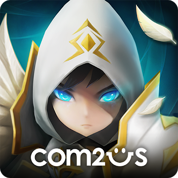

컴투스에서 개발한 모바일 게임이다. 2014년 4월 17일에 서비스가 시작되었으며 `2014 대한민국 게임대상`에서 우수상과 기술창작상(기획/시나리오 부문) 두 개 부문에서 수상을 하기도 했다.해외에서도 굉장히 히트했으며 컴투스의 매출 중 84%가 해외에서 나올 수 있도록 해 준 엄청난 게임이다.

한국 모바일 게임으로서 거의 유일하게 세계 100여개국이 넘는 시장에서 고루 사랑받고 있으며, 프랑스 애플 앱스토어와 구글 플레이 스토어에서 매출 1위를 기록했고, 유럽 주요 마켓인 독일에서도 2년간 양대 마켓 탑10 자리를 고수 중이다. 신흥 시장인 동남아시아에선 ‘국민 RPG’로 평가 받을 정도의 성과를 냈다고 한다